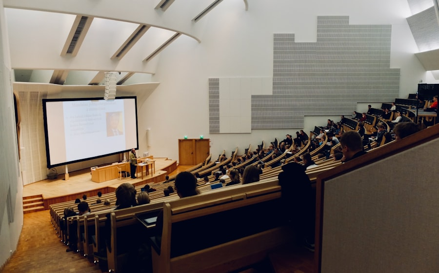

Qabul ochiq2026/2027 o‘quv yili
Navoiy davlat universiteti — Sizning akademik salohiyatingizni ochadigan makon. 2026–2027 o‘quv yili uchun qabul ochiq.
Qabulga ariza topshirish


9 dastur
6 dastur
11 dastur
3 dastur
3 kafedra
2 kafedra
3 kafedra
4 kafedra
5 kafedra
4 kafedra
7 kafedra
0
0
0
0
Mintaqaning yetakchi klassik universiteti — ta’lim, ilm-fan va ma’naviyat uyg‘unligi.
25+ faol klub va jamiyat: ilmiy, ijodiy va ko‘ngilli loyihalar.
Zamonaviy sport zali va maydonchalar, fakultetlararo musobaqalar.

Boy kutubxona fondi, elektron resurslar va o‘qish zallari.

Zamonaviy uskunalar bilan jihozlangan o‘quv va ilmiy laboratoriyalar.

Har hafta yangi tadbirlar, festivallar va uchrashuvlar.

Universitetning eng tantanali kuni — diplom topshirish marosimi.
Qo‘shma ta’lim dasturlari, akademik almashinuv, ilmiy loyihalar va sanoat korxonalaridagi amaliyot — hamkorlik universitet hayotining barcha yo‘nalishlarini qamrab oladi.
Xalqaro hamkorlikBakalavriat, magistratura, doktorantura va qisqa muddatli kurslar — 40 dan ortiq ta’lim dasturi. Onlayn ariza qabul portali orqali topshiriladi.
Hujjat topshirishHujjatlar ro‘yxati, imtihon jadvali va qabul shartlari bilan «Qabul» sahifasida tanishing.
Qabul haqida batafsil →